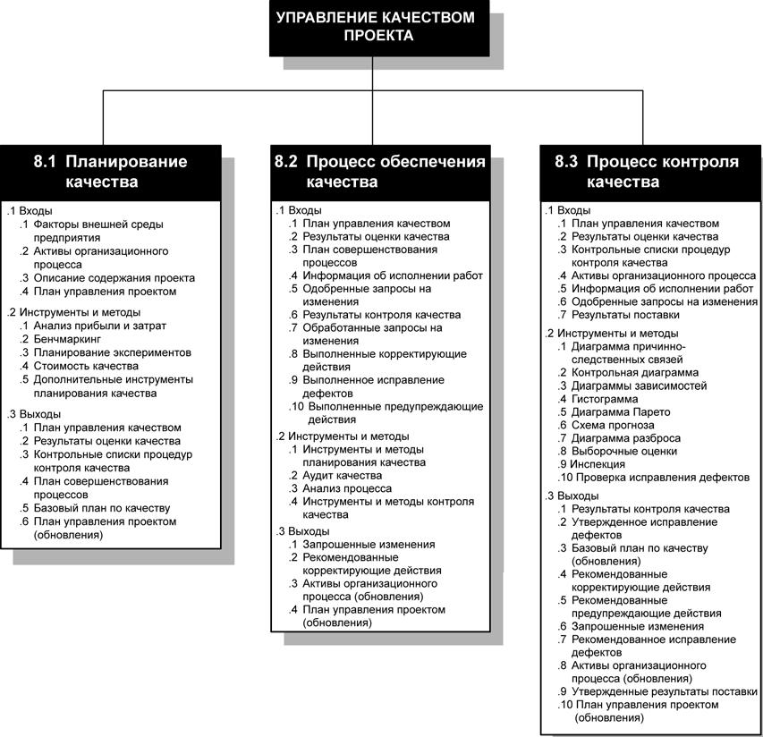
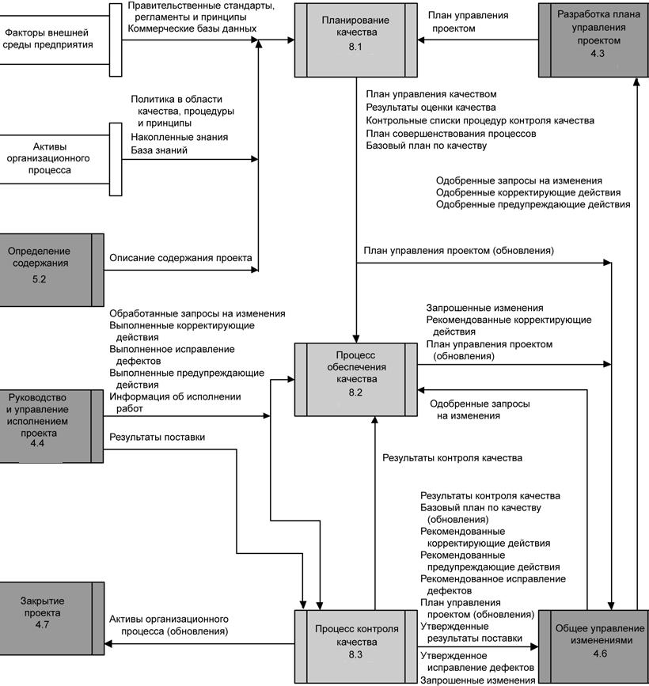

Введение
Процессы управления качеством проекта объединяют все осуществляющиеся в исполняющей организации операции, определяющие политику, цели и распределение ответственности в области качества таким образом, чтобы проект удовлетворял тем нуждам, для которых он был предпринят. Управление качеством осуществляется посредством системы управления качеством, предусматривающей определенные правила, процедуры и процессы по планированию качества, обеспечению качества и контролю качества, а также операции по их совершенствованию. На рис. 11.1 приведена общая схема процессо в управления качеством проекта, а на рис. 11.2 показана диаграмма зависимостей этих процессов и их входы, выходы и другие процессы из данной области знаний.

Рисунок - 11.1 Общая схема процессо в управления качеством проекта

Рисунок 11.2 - Диаграмма зависимостей этих процессов и их входы, выходы и другие процессы из данной области знаний
Процессы управления качеством проектов включают в себя следующее:
8.1 Планирование качества - определение того, какие из стандартов качества относятся к данному проекту и как их удовлетворить.
8.2 Процесс обеспечения качества - выполнение плановых систематических операций по качеству, обеспечивающих выполнение всех предусмотренных процессов, необходимых для того, чтобы проект соответствовал оговоренным требованиям.
8.3 Процесс контроля качества - мониторинг определенных результатов с целью определения их соответствия принятым стандартами качества и определение путей устранения причин, вызывающих неудовлетворительное исполнение.
Модель управления качеством, описанная в этом разделе, в основе своей соответствует требованиям Международной организации по стандартизации (ISO). Эта обобщенная модель учитывает также авторские модели управления качеством, разработанные Демингом (Deming), Джураном (Juran), Кросби (Crosby) и др., и общие модели, такие как Тотальное управление качеством (TQM), Сигма 6 (Six Sigma), Анализ характера и последствий отказов, Контрольные оценки на этапе проектирования, Мнение заказчика, Стоимость качества (COQ) и Постоянное совершенствование.
Управление качеством проекта должно быть направлено как на управление проектом, так и на продукт проекта. Хотя управление качеством проекта распространяется на все проекты, независимо от продукта проекта, но конкретные меры и методы обеспечения качества продукта зависят от конкретного типа продукта, получаемого в рамках проекта. Например, для управление качеством программных продуктов нужны иные подходы и меры, нежели для атомных электростанций, хотя подходы к управлению качеством проекта одинаковы в обоих случаях. Но в любом случае невыполнение требований к качеству по какому-либо критерию может привести к серьезным негативным последствиям для участников проекта.
Например:
- Удовлетворение требований заказчика за счет сверхурочной работы команды проекта может вызвать негативные последствия в виде переутомления сотрудников, появления необоснованных ошибок или доработок.
- Достижение целей, обозначенных в расписании проекта, за счет поспешного проведения проверок качества может привести к отрицательным последствиям, если ошибки останутся незамеченными.
Качество - это "степень, в какой совокупность внутренних характеристик чего-либо соответствует требованиям" (Американское общество по качеству, 2000 г.).
Входами для разработки требований проекта являются заявленные и предполагаемые потребности. Важнейшим элементом в управлении качеством проекта является возможность превратить потребности, пожелания и ожидания участников проекта в требования в ходе анализа участников проекта (п.5.2.2.4, рис.7.1), проводимого в рамках управления содержанием проекта.
Необходимо четко понимать разницу между качеством и сортом.
Сорт - это категория (класс), присваиваемая продуктам или услугам, имеющим одно и то же функциональное назначение, но различные технические характеристики.
Низкое качество - это всегда проблема, чего нельзя сказать о низком сорте.
Например, программный продукт может быть высокого качества (без явных ошибок, хорошая сопроводительная документация) и низкого сорта (ограниченное число возможностей), или низкого качества (частые сбои, недостаточно полное описание), но высокого сорта (множество различных функций). Менеджер проекта и команда управления проектом отвечают за определение и обеспечение требуемых уровней, как качества, так и сорта.
Прецизионность и точность - не одно и то же.
Прецизионность - это когда значения периодически повторяемых измерений при сравнении имеют небольшие расхождения.
Точность - это когда измеренное значение наиболее близко соответствует истинному значению.
Прецизионные измерения совсем не обязательно являются точными. А очень точное измерение может и не быть прецизионным. Команда управления проектом должна определить степень требуемой точности или прецизионности измерений, либо и того и другого.
Современное управление качеством служит дополнением к управлению проектом.
Например, обе дисциплины признают важность следующих положений:
− Удовлетворение потребностей заказчика. Понимание, оценка, определение и управление ожиданиями заказчика таким образом, чтобы его требования оказались выполненными. Для этого необходимо обеспечить сочетание соответствия требованиям (проект должен произвести то, что было заявлено) и пригодности к использованию (продукт или услуга должны удовлетворять реальным потребностям).
− Предотвращение важнее инспектирования. Затраты на превентивные меры по предупреждению ошибок всегда значительно ниже, чем стоимость их исправления после обнаружения в результате инспектирования.
- Ответственность руководства. Для достижения успеха необходимо участие всех членов команды, но обеспечение ресурсами, необходимыми для достижения успеха - это обязанность руководства.
- Постоянное совершенствование. Цикл "планирование - исполнение - проверка - воздействие" является основой повышения качества.
Стоимость качества имеет непосредственное отношение к общей стоимости всех мероприятий, направленных на обеспечение качества. Решения, принимаемые по проекту, могут оказать влияние на эксплуатационную стоимость качества, вследствие возвратов продукции, рекламаций по гарантийным обязательствам и кампаний по отзыву продукции.
Однако, поскольку проект имеет временную природу, то расходы на улучшение качества продукта, особенно в оценку и в предупреждение возникновения дефектов, чаще приходятся на долю организации заказчика, а не закладываются в проект, поскольку продолжительность проекта может оказаться недостаточной долгой для того, чтобы возможно было окупить вложения.